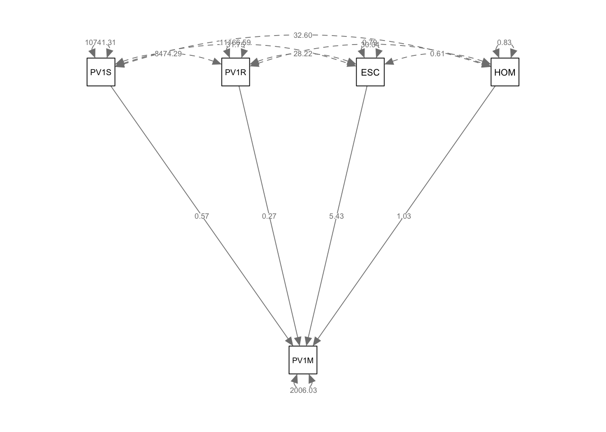
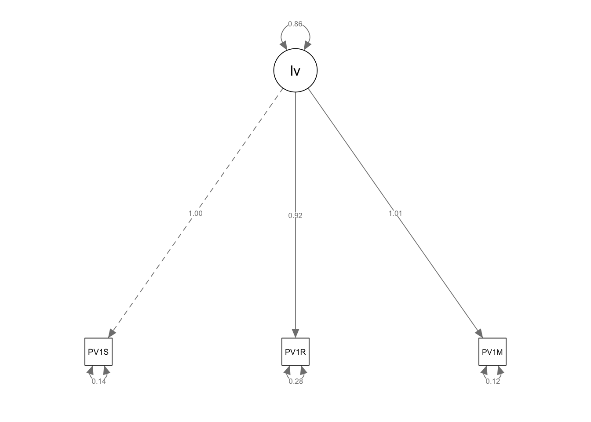
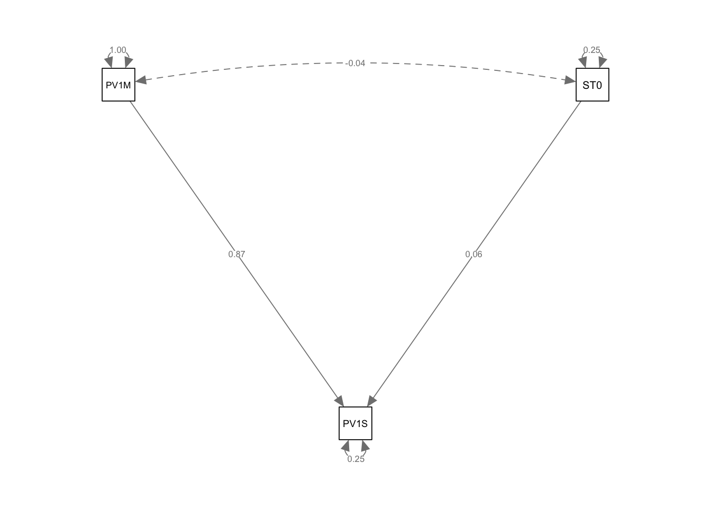
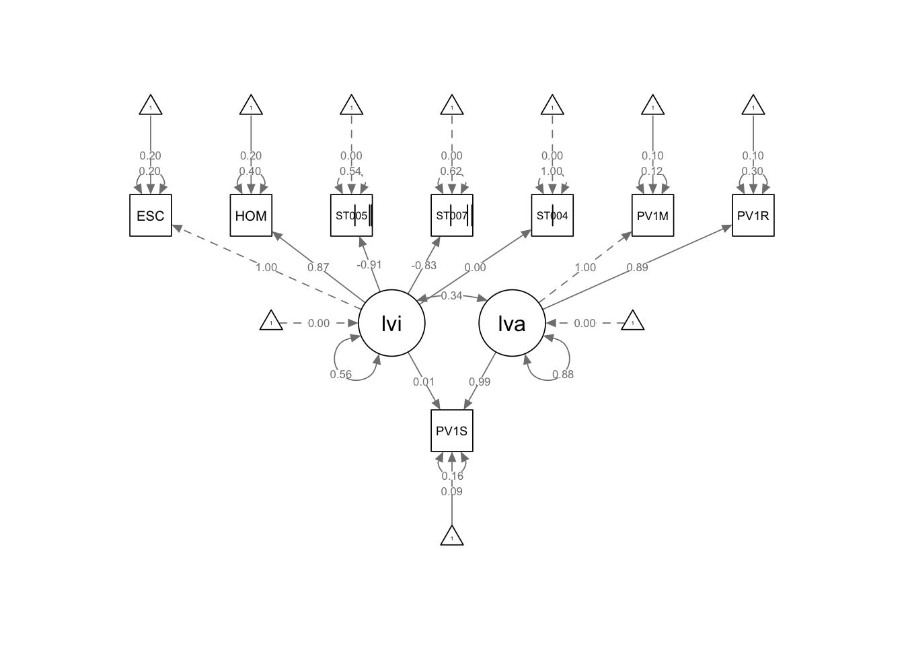

SEM
1 Structural Equation Modelling
Structural Equation Modelling (SEM) is an approach to representing the correlations between a number of variables linked to some phenomenon (Lomax 2013). A dependent variable (for example, scores on some test) might be linked to a number of independent variables (for example, hours of study, teacher’s level of experience, etc.). A powerful aspect of SEM is that it can be used to construct latent variables - variables which have explanatory usefulness but can’t be measured directly - out of a number of independent variables. Variables researchers can measure are called manifest variables, for example, mathematics, science and reading scores are manifest variables. These three scores might be taken to indicate intelligence, a latent variable, which can’t be measured directly.
To take another case, a researcher might wish to investigate how home environment impacts students’ mathematics achievement. There is no single variable, no single score, that can be measured to represent a young person’s home environment as 7/10 or 3/10. We might then consider their home environment a latent variable. We imagine that the nature of the circumstances in their home impacts their learning, but we cannot directly report the level of the home environment as a variable.
SEM allows us to propose a latent variable, like home environment, and calculate the contribution of a number of variables we can measure (e.g. the number of books in the home, parents’ occupation and level of education, family wealth, etc.) to the latent variable.
1.1 Assummptions of SEM
SEM is based on a number of assumptions:
- Independence - the Observations are assumed to be independent of each other
- No Perfect Multicollinearity - the independent variables are not perfectly correlated
- Homoscedasticity - the variance of the residuals is constant
- No multicollinearity - the independent variables are not highly correlated (Hoyle 2012)
- Sample size - a large enough sample size to ensure the model is stable - assuming a common power level of 80% and significance levels of 0.05, and minimum path coefficient of 0.2, a sample size of 155 is required (Hair Jr et al. 2021)
1.1.1 The steps to fitting an SEM model
The typical steps taken when fitting an SEM model are shown below (see Figure 5.1 in (Kline 2023)):
Researchers typically begin by specifying a model, that is setting out the setting out the relationships theory suggest exists between variables. Specification is an important steps as the following stages assume the model is correct. model identification is the process of determining if a model can be estimated from available data. If the model is not identified, the researcher must go back to the model specification stage and make changes. If the model is identified, the researcher can move on to collecting data. Once data are collected, the model is estimated and the fit of the model is assessed (multiple approaches to assessing model fit are discussed below). If the model does not fit the data well, the researcher may need to respecify the model. If the model fits the data well, the researcher can interpret the estimates and consider equivalent models. For any model, there may be many (perhaps infintely many) other models that fit the data equally well.Finally, the researcher reports the results.
1.1.2 A simple structural model
Researchers use SEM to determine the correlations between a number of variable in a data set. It allows the relationship between multiple variables to be taken into account.
For example, in the PISA data set, in the context of data related to UK students achievement in mathematics, a researcher might be interested in building a model of mathematics (PV1MATH) score by a number of variables in the data set, for example, reading score (PV1READ), science score (PV1SCIE), family cultural capital (the index of economic, social and cultural status: ESCS), wealth (WEALTH) and gender (ST004D01T). SEM can be used to represent the relationship between these variables and students’ mathematics achievement.
To create the SEM we will use the lavaan package - lavaan is a contraction of Latent Variable Analysis and allows us to fit a number of different SEMs to data. We will also use the semPlot package to visualise the results. The relationships between variables in SEMs are often represented as path diagrams - representations in which variables are represented as squares or circles and arrows labelled with correlation coefficients join the variables to represent the relationships.semPlot allows us to draw path diagrams.
1.2 Model Syntax
Consider the SEM introduced above - a model of the variables that impact students’ mathematics scores.
To create the SEM of UK mathematics achievement we first create a subset data.frame of UK data, UKdata.
# Load lavaan to create the SEM and semPlot to draw path diagrams
library(lavaan)
library(semPlot)
# Create a subset of PISA data related to the UK containing the dependent variable of interest (PV1MATH) and the independent variables we are interested in
1UKdata <- PISA_2022 %>%
2 select(CNT, PV1SCIE, PV1MATH, PV1READ, ESCS, HOMEPOS, ST004D01T) %>%
3 filter(CNT == "United Kingdom")- 1
-
line 1 passes the whole
PISA_2022dataset and pipes it into the next line using%>% - 2
- line 2 selects the variables of interest
- 3
- line 3 filters for the UK
The first step is to create the model. Models in lavaan are represented as a dependent variable y, linked to a number of independent variables x1, x2, x3, etc. The ~ symbol is the regression operator. A simple regression formula might then take the form of:
y ~ x1 + x2 + x3
To indicate a variable is a latent variable we use the =~ operator. So to define a model in which the latent variable f1 varies with three independent variables we would write:
f1 =~ x1 + x2 + x3
In some cases, the independent variables may correlate. For example, if we are investigating mathematics achievement (the dependent variable, y), by looking at the independent variables of reading (x1) and science score (x2), it may be the case that reading and science cores covary (that is changes to one impacts the other). In this case, we can specify covariance in our model by stating:
y ~ x1 + x2 The regression model x1 ~ x2 Indicating the covariance
In our case, considering UK mathematics achievement, we can set up a model that mathematics score PV1MATH varies with science score PV1SCIE, reading score PV1READ, cultural resources in the home ESCS, a wealth proxy measure, HOMEPOS: model <- "PV1MATH ~ PV1SCIE + PV1READ + ESCS + HOMEPOS"
We then pass the model, and the data.frame to the sem function: fit<-sem(model, data=UKdata). This produces a model as the output fit. To see the results we call summary(fit)
1model<-"PV1MATH ~ PV1SCIE + PV1READ + ESCS + HOMEPOS"
2fit<-sem(model, data = UKdata)
3summary(fit)- 1
-
line 1 specify the model - we want to model
PV1MATHusingPV1SCIE,PV1READ,ESCS(class proxy) andHOMEPOS(wealth proxy). - 2
-
line 2 create the model using the
fitfunction - 3
- line 3 print the model
lavaan 0.6-19 ended normally after 1 iteration
Estimator ML
Optimization method NLMINB
Number of model parameters 5
Used Total
Number of observations 11083 12972
Model Test User Model:
Test statistic 0.000
Degrees of freedom 0
Parameter Estimates:
Standard errors Standard
Information Expected
Information saturated (h1) model Structured
Regressions:
Estimate Std.Err z-value P(>|z|)
PV1MATH ~
PV1SCIE 0.565 0.007 85.604 0.000
PV1READ 0.267 0.006 41.953 0.000
ESCS 5.432 0.734 7.404 0.000
HOMEPOS 1.027 0.716 1.434 0.151
Variances:
Estimate Std.Err z-value P(>|z|)
.PV1MATH 2006.033 26.948 74.441 0.000In the regressions table, the function returns the value of the regression coefficients for each independent variable, and the P value (P(>|z|)). Note in the model above all the independent variables are significant, but the largest loading comes from the HOMEPOS (wealth) variable, with the science (PV1SCIE) and reading (PV1READ) scores contributing comparatively little.
Finally, to produce a visual representation of the model, we pass our model, fit to the semPaths function (from the semPlot package we loaded above). We can specify was we want displayed on the lines, in this case the estimate of the regression coefficients between the variables.
In path diagrams, directly measured variables, manifest variables, are shown as squares. Latent variables are represented as circles. Single headed arrows represent the regression effects between variables. The curved arrows starting and ending on a square or circle indicate the variances of those variables. When curved arrows start and end on different variables, they represent covariance.
One issue to note here is the difference in the variance for the science and mathematics scores. PV1SCIE, PV1READ and PV1MATH are test scores and so have a large variance (the maximum and minimum science scores, for example, are 0.0 and 895.4). The variance of the two test variables is much greater that for HOMEPOS (Min=-10.0741 mean=-0.4447, Max=15.240) and ESCS (Min=-6.841 mean=-0.310, Max=7.380).
To resolve this difference, we can use the scale function to create a similar scale for PV1SCIE, PV1MATH and PV1READ. The scale function sets the mean of the variable to 0 and the variance to 1.
1UKdata$PV1READ<-scale(UKdata$PV1READ)
2UKdata$PV1MATH<-scale(UKdata$PV1MATH)
3UKdata$PV1SCIE<-scale(UKdata$PV1SCIE)
fit<-sem(model, data=UKdata)
summary(fit)
semPaths(fit, whatLabels = "Estimate")- 1
- line 1 normalise the reading scores about a mean of 0 with a variance of 1
- 2
- line 2 normalise maths scores
- 3
- line 3 normalise science scores

lavaan 0.6-19 ended normally after 1 iteration
Estimator ML
Optimization method NLMINB
Number of model parameters 5
Used Total
Number of observations 11083 12972
Model Test User Model:
Test statistic 0.000
Degrees of freedom 0
Parameter Estimates:
Standard errors Standard
Information Expected
Information saturated (h1) model Structured
Regressions:
Estimate Std.Err z-value P(>|z|)
PV1MATH ~
PV1SCIE 0.607 0.007 85.604 0.000
PV1READ 0.295 0.007 41.953 0.000
ESCS 0.057 0.008 7.404 0.000
HOMEPOS 0.011 0.008 1.434 0.151
Variances:
Estimate Std.Err z-value P(>|z|)
.PV1MATH 0.222 0.003 74.441 0.000Scaling the test scores gives a more balanced model.
Notice the curved arrow joining the manifest variable PV1M (PV1MATH) to itself. This represents the residual variance for PV1MATH, meaning the amount of variation in PV1MATH that is not explained by the predictors PV1SCIE (science) and PV1READ (reading). The estimate of 0.219 suggests that even after accounting for science and reading scores, there is still significant unexplained variance in mathematics scores. The high z-value (69.581) and p-value (0.000) indicate that this residual variance is statistically significant.
We can make the model more complex, by adding that two of our independent variables, reading (PV1READ) and science (PV1SCIE) scores may co-vary, and vary with other independent variables. That is there is a relationship between science and reading scores. The covariance is indicated by the ~~ operator.
1model<-"PV1MATH ~ PV1SCIE + PV1READ + ESCS + HOMEPOS
2 PV1READ ~~ PV1SCIE
PV1READ ~ PV1SCIE + PV1MATH + ESCS + HOMEPOS
PV1SCIE ~ PV1READ + PV1MATH + ESCS + HOMEPOS"
3fit<-sem(model, data = UKdata)
4summary(fit)
5semPaths(fit, whatLabels = "Estimate")- 1
-
line 1 specify the model - recall
~is the regression operator linking dependent and independent variable and~~indicates two variables covary. - 2
-
line 2 specify that reading and science scores covary using
~~ - 3
-
line 5 create the model using the
fitfunction - 4
- line 6 print the model
- 5
-
line 7 use
semPathto visualise the model, specifuing that we want the coefficients printed on the lineswhatLabels = "Estimate"
lavaan 0.6-19 ended normally after 23 iterations
Estimator ML
Optimization method NLMINB
Number of model parameters 16
Used Total
Number of observations 11083 12972
Model Test User Model:
Test statistic NA
Degrees of freedom -4
P-value (Unknown) NA
Parameter Estimates:
Standard errors Standard
Information Expected
Information saturated (h1) model Structured
Regressions:
Estimate Std.Err z-value P(>|z|)
PV1MATH ~
PV1SCIE 0.454 NA
PV1READ 0.171 NA
ESCS 0.113 NA
HOMEPOS 0.071 NA
PV1READ ~
PV1SCIE 0.242 NA
PV1MATH 0.386 NA
[ reached getOption("max.print") -- omitted 7 rows ]
Covariances:
Estimate Std.Err z-value P(>|z|)
.PV1READ ~~
.PV1SCIE 0.065 NA
Variances:
Estimate Std.Err z-value P(>|z|)
.PV1MATH 0.282 NA
.PV1READ 0.383 NA
.PV1SCIE 0.340 NA 1.2.1 Modelling a latent variable
As introduced above, we can use SEM to model a latent variable. For example, we might assume that students have some underlying variable linked to their general intelligence. However, in the PISA data set, we have no variable that directly measures students general intelligence. We do have data on their achievement in science (PV1SCIE), mathematics (PV1MATH) and reading (PV1READ) and we might assume that as the latent variable of general achievement increases so does achievement in science, mathematics and reading.
To perform the analysis, we use the =~ operator in our model, which indicates a latent variable. This time, our model then sets out that we are interested in a lv (latent variable) which varies with science (PV1SCIE), mathematics (PV1MATH) and reading (PV1READ) scores:
model<-“lv =~ PV1SCIE + PV1READ + PV1MATH”
Then we run the model using sem in the same way as above, and plot the model using semPaths.
# For a latent variable
# =~ means a latent variable
1model<-"lv =~ PV1SCIE + PV1READ + PV1MATH"
fit<-sem(model, data = UKdata)
summary(fit)
semPaths(fit, whatLabels = "Estimate")- 1
-
line 1 specify the latent variable using
=~

lavaan 0.6-19 ended normally after 18 iterations
Estimator ML
Optimization method NLMINB
Number of model parameters 6
Number of observations 12972
Model Test User Model:
Test statistic 0.000
Degrees of freedom 0
Parameter Estimates:
Standard errors Standard
Information Expected
Information saturated (h1) model Structured
Latent Variables:
Estimate Std.Err z-value P(>|z|)
lv =~
PV1SCIE 1.000
PV1READ 0.919 0.006 143.596 0.000
PV1MATH 1.015 0.006 175.355 0.000
Variances:
Estimate Std.Err z-value P(>|z|)
.PV1SCIE 0.145 0.003 43.323 0.000
.PV1READ 0.278 0.004 66.360 0.000
.PV1MATH 0.119 0.003 36.723 0.000
lv 0.855 0.013 67.872 0.000We can develop a more complex latent variable model. Let us assume that UK students’ reading scores depend on two latent variables, home environment (lvh, e.g. number of books, parental level of education etc.) and cognitive ability (lvc, e.g. as reported by science and mathematics scores). Here are the variables we will use to create the home environment latent variable:
| Item name | Description |
|---|---|
| ESCS | Index of economic, social and cultural status (WLE) |
| HOMEPOS | Family Wealth |
# Create a UK data frame with plausible values
UKdata<-PISA_2022%>%
1 select(ESCS, HOMEPOS, PV1READ, PV1SCIE, PV1MATH, CNT) %>%
2 filter(CNT == "United Kingdom")
# Scale the test scores
3UKdata$PV1READ <- scale(UKdata$PV1READ)
UKdata$PV1MATH <- scale(UKdata$PV1MATH)
UKdata$PV1SCIE <- scale(UKdata$PV1SCIE)
# Propose a model with two latent variables - one related to home (lvh), the other cognitive ability (lvc)
5model<-"lvh =~ ESCS + HOMEPOS
lvc =~ PV1MATH + PV1READ
PV1SCIE ~ lvh + lvc"
# Fit the model
6fit<-sem(model, data = UKdata)
7summary(fit)
semPaths(fit, whatLabels = "Estimate")- 1
- line 1 create the data frame for modelling, select variables of interest
- 2
- line 4 filter for the UK
- 3
- line 5 scale the variables to normalise all around a mean of 0 and variance 1
- 5
-
line 12 create the model using the
fitfunction - 6
- line 3 print the model
- 7
-
line 4 use
semPathto visualise the model, specifying that we want the coefficients printed on the lineswhatLabels = "Estimate"

lavaan 0.6-19 ended normally after 29 iterations
Estimator ML
Optimization method NLMINB
Number of model parameters 12
Used Total
Number of observations 11083 12972
Model Test User Model:
Test statistic 22.605
Degrees of freedom 3
P-value (Chi-square) 0.000
Parameter Estimates:
Standard errors Standard
Information Expected
Information saturated (h1) model Structured
Latent Variables:
Estimate Std.Err z-value P(>|z|)
lvh =~
ESCS 1.000
HOMEPOS 1.023 0.019 54.286 0.000
lvc =~
PV1MATH 1.000
PV1READ 0.898 0.007 130.208 0.000
Regressions:
Estimate Std.Err z-value P(>|z|)
PV1SCIE ~
lvh 0.000 0.008 0.019 0.985
lvc 0.990 0.007 137.089 0.000
Covariances:
Estimate Std.Err z-value P(>|z|)
lvh ~~
lvc 0.314 0.009 35.365 0.000
Variances:
Estimate Std.Err z-value P(>|z|)
.ESCS 0.194 0.010 18.471 0.000
.HOMEPOS 0.208 0.011 18.898 0.000
.PV1MATH 0.124 0.004 33.351 0.000
.PV1READ 0.298 0.005 61.818 0.000
.PV1SCIE 0.158 0.004 40.379 0.000
lvh 0.597 0.014 41.261 0.000
lvc 0.889 0.014 63.886 0.000Interesting features to note are a) the much higher loading of the cognitive latent variable (lvc has a loading of 0.99) than the home environment (lvh, loading 0.00); b) the roughly equal contribution of mathematics and reading scores to lvb (the cognitive ability latent variable).
Note the dotted line from the ESCS variable (truncated here to ESC) indicates that ESCS is acting as a marker variable, that is, it is fixed at 1.0, and the other variables determined relative to it. The same is true for PV1MATH for the ability latent variable.
1.3 Models with categorical variables
The models above used only numeric variables, but categorical variables can also be used in SEM. For example, in the PISA data set, the variable ST255Q01JA asks “How many books are there in your home?”. We can add this item to the latent variable for the home environment (lvh). This is an ordinal variable. However, we need to indicate this variable is ordinal in three ways. First, ensure the variable is categorised as an ordinal variable (UKdata$ST255Q01JA <- as.ordered(UKdata$ST255Q01JA)). Second, in the fit function we need to label the ordinal functions. Third, we need to use a different process of estimating the model, WLSMV (Weighted Least Squares Mean and Variance-adjusted). This gives: fit <- sem(model, data = your_data, ordered = c("var2", "var3"), estimator = "WLSMV")
# Create a UK data frame with plausible values
UKdata<-PISA_2022%>%
select(ESCS, HOMEPOS, PV1READ, PV1SCIE, PV1MATH, CNT,
ST255Q01JA) %>%
filter(CNT == "United Kingdom")
# Scale the test scores
UKdata$PV1READ <- scale(UKdata$PV1READ)
UKdata$PV1MATH <- scale(UKdata$PV1MATH)
UKdata$PV1SCIE <- scale(UKdata$PV1SCIE)
1UKdata$ST255Q01JA <- as.ordered(UKdata$ST255Q01JA)
# Propose a model with two latent variables - one related to home (lvh), the other cognitive ability (lvc)
model<-"lvh =~ ESCS + HOMEPOS + ST255Q01JA
lvc =~ PV1MATH + PV1READ
PV1SCIE ~ lvh + lvc"
# Fit the model
fit <- sem(model, UKdata, ordered = c("ST255Q01JA"),
2 estimator = "WLSMV")
summary(fit)
semPaths(fit, whatLabels = "Estimate") - 1
-
set the variable
ST255Q01JAas an ordered variable - 2
-
indicate that the variable
ST255Q01JAis ordered and use the WLSMV estimator

lavaan 0.6-19 ended normally after 32 iterations
Estimator DWLS
Optimization method NLMINB
Number of model parameters 24
Used Total
Number of observations 11038 12972
Model Test User Model:
Standard Scaled
Test Statistic 364.857 1524.165
Degrees of freedom 7 7
P-value (Chi-square) 0.000 0.000
Scaling correction factor 0.240
Shift parameter 1.912
simple second-order correction
Parameter Estimates:
Parameterization Delta
Standard errors Robust.sem
Information Expected
Information saturated (h1) model Unstructured
Latent Variables:
Estimate Std.Err z-value P(>|z|)
lvh =~
ESCS 1.000
HOMEPOS 1.107 0.012 94.632 0.000
ST255Q01JA 1.192 0.018 66.202 0.000
lvc =~
PV1MATH 1.000
PV1READ 0.912 0.010 95.719 0.000
Regressions:
Estimate Std.Err z-value P(>|z|)
PV1SCIE ~
lvh 0.002 0.010 0.167 0.868
lvc 0.998 0.009 110.955 0.000
Covariances:
Estimate Std.Err z-value P(>|z|)
lvh ~~
lvc 0.324 0.008 39.354 0.000
Intercepts:
Estimate Std.Err z-value P(>|z|)
.ESCS 0.119 0.009 13.608 0.000
.HOMEPOS 0.134 0.009 15.494 0.000
.PV1MATH 0.039 0.010 4.103 0.000
.PV1READ 0.049 0.010 5.053 0.000
.PV1SCIE 0.038 0.010 3.982 0.000
Thresholds:
Estimate Std.Err z-value P(>|z|)
ST255Q01JA|t1 -1.675 0.021 -81.593 0.000
ST255Q01JA|t2 -0.835 0.014 -61.510 0.000
ST255Q01JA|t3 -0.272 0.012 -22.530 0.000
ST255Q01JA|t4 0.505 0.012 40.369 0.000
ST255Q01JA|t5 1.022 0.014 70.526 0.000
ST255Q01JA|t6 1.633 0.020 81.825 0.000
Variances:
Estimate Std.Err z-value P(>|z|)
.ESCS 0.340 0.007 51.922 0.000
.HOMEPOS 0.275 0.006 42.753 0.000
.ST255Q01JA 0.360
.PV1MATH 0.139 0.006 22.027 0.000
.PV1READ 0.286 0.006 46.410 0.000
.PV1SCIE 0.157 0.004 42.365 0.000
lvh 0.451 0.011 39.843 0.000
lvc 0.872 0.016 54.996 0.000Triangles have appeared which represent the threshold for the ordinal variable. A threshold in SEM refers to the value that defines the boundary between categories of an ordinal variable - in this case the number of books in the home. The variable ST255Q01JA in your data represents a set of ordered categories about the number of books. For example: “There are no books” ; 1-10 books.” “11-25 books.” … (and so on).
The bars on the squares are visual markers that indicate which variables are being treated as ordinal variables in the model. In your case, you’ve specified ST255Q01JA as an ordinal variable by using the as.ordered() function. The bars are a way of indicating that ST255Q01JA is not a continuous variable but an ordinal one, which reflects a ranked or ordered scale.
Tip

If you want to link an ordinal variable directly to an outcome variable, for example, if you want to link books directly to reading, doing it through a latent variable allows lavaan to estimate the thresholds for the ordinal variable.
To fit a categorical variable like gender, you can use the as.factor function to convert the variable to a factor and then use the fit <- sem(model, UKdata, estimator = "MLR") function to estimate the model. MLR is the default estimator for categorical variables. MLR stands for Maximum Likelihood Robust. It is an estimator used in structural equation modeling (SEM), particularly when dealing with non-normal data or small sample sizes. See the example below using gender:
# Create a data frame with the required base variables
UKdata<-PISA_2022 %>%
select(CNT, PV1SCIE, PV1MATH, ST004D01T) %>%
filter(CNT == "United Kingdom") %>%
na.omit() # Remove the NAs to create a two level varibale.
# set ST004D01T to a factor
UKdata$ST004D01T <- factor(UKdata$ST004D01T, levels = c("Male", "Female"))
# Scale the numeric variables
UKdata <- UKdata %>%
mutate(PV1SCIE = scale(PV1SCIE),
PV1MATH = scale(PV1MATH))
# Create the model
model <- "PV1SCIE ~ PV1MATH + ST004D01T"
fit <- sem(model, data = UKdata, estimator = "MLR")
summary(fit)lavaan 0.6-19 ended normally after 1 iteration
Estimator ML
Optimization method NLMINB
Number of model parameters 3
Number of observations 12972
Model Test User Model:
Standard Scaled
Test Statistic 0.000 0.000
Degrees of freedom 0 0
Parameter Estimates:
Standard errors Sandwich
Information bread Observed
Observed information based on Hessian
Regressions:
Estimate Std.Err z-value P(>|z|)
PV1SCIE ~
PV1MATH 0.870 0.004 196.331 0.000
ST004D01T 0.056 0.009 6.457 0.000
Variances:
Estimate Std.Err z-value P(>|z|)
.PV1SCIE 0.246 0.003 73.035 0.000
Tip
If you have both categorical and ordinal variables, it’s best to use WLSMV because it can appropriately handle both ordinal variables (using thresholds) and categorical variables (using multinomial logistic regression), while also providing correct standard errors.
1.4 Formatting path diagrams
- To rotate the plot (
rotation = 2):

- To include more letters of variable names in the nodes (
nCharNodes = 7) specifies the number of characters displayed (default is 3):

- To change the colour of the lines (
edge.color="blue") and the size of the nodes (sizeMan=8):

- To link the thickness of lines to their value (
"std"):

- To make the labels larger (
edge.label.cex = 0.8):
semPaths(fit, whatLabels = "Estimate", rotation = 2,
edge.color = "blue",
sizeMan = 5, "std", edge.label.cex = 0.8) 
- To change the text size in the nodes (
label.cex = 0.8):
semPaths(fit, whatLabels = "Estimate", rotation = 2,
edge.color = "blue",
sizeMan = 5, "std", edge.label.cex = 0.8,
label.cex = 0.8) 
- To add a title (
title("PISA path diagram")):
semPaths(fit, whatLabels = "Estimate", rotation = 2,
edge.color = "blue", sizeMan = 5, "std",
edge.label.cex = 0.8)
title("PISA path diagram")
- To give longer node names (
nodeNames=nodenames), and you can increase the abbreviation of labels to a set number of characters in the nodes usingnCharNodes = 3.node.label.cexsets the size of the node label text:
nodenames<-c("Economic, social and cultural status",
"Wealth", "Math score", "Reading score", "Science Score")
semPaths(fit, whatLabels = "Estimate", rotation=2, edge.color = "blue",
sizeMan =5, "std", edge.label.cex = 0.8, nodeNames = nodenames,
nCharNodes = 5)
title("PISA path diagram")
Tip
You can find more information on formatting path diagrams using semPaths on semptools and on the Comprehensive R Archive network (CRAN) documentation for the package.
1.5 Estimating model fit
After running a SEM, it is important to determine how well the model fits the data. There are a number of different measures of model fit, no one measure provides a definitive measure of the fit - it is best practice to consider a number of different indicators and come to a holistic judgement. Measures include:
The Chi-Square Test of Model Fit Assume the null hypothesis that the model fits the data well. A non-significant p-value indicates good fit. However, this test is sensitive to sample size, and with large samples, even minor deviations may be significant: ‘[Chi-square] is sensitive to sample size because as sample size increases (generally above 200), the χ2 has a tendency to indicate a significant probability level’ (Schumacker and Lomax 2004, 92).
Comparative Fit Index (CFI) and Tucker-Lewis Index (TLI) Values closer to 1 indicate better fit. Common thresholds for the two indicies are Acceptable fit: > 0.90 Good fit: > 0.95 (Kline 2023, 204; McDonald and Ho 2002)
Root Mean Square Error of Approximation (RMSEA) A measure of approximate fit in the population. Common thresholds: Good fit: < 0.06 Acceptable fit: < 0.08 Look at the 90% confidence interval for RMSEA as well.
To get estimates of model fit, when you run the summary command, include: summary(fit, fit.measures = TRUE)
For example:
# Create a UK data frame with plausible values
UKdata<-PISA_2022 %>%
1 select(CNT, ESCS, HOMEPOS,
PV1READ, PV1SCIE, PV1MATH)%>%
2 filter(CNT == "United Kingdom")
# Scale the test scores
3UKdata$PV1READ <- scale(UKdata$PV1READ)
UKdata$PV1MATH <- scale(UKdata$PV1MATH)
UKdata$PV1SCIE <- scale(UKdata$PV1SCIE)
# Propose a model with two latent variables - one related to home (lvh), the other cognitive ability (lvc)
4model<-"lvh =~ ESCS + HOMEPOS
lvc =~ PV1MATH + PV1READ
PV1SCIE ~ lvh + lvc"
# Fit the model
5fit<-sem(model, data = UKdata)
6summary(fit, , fit.measures = TRUE)
7semPaths(fit, whatLabels = "Estimate")- 1
- line 1 create the data frame for modelling, select variables of interest
- 2
- line 4 filter for the UK
- 3
- line 8 scale the variables to normalise all around a mean of 0 and variance 1
- 4
-
line 11 specify the model - note that two latent variables are proposed (lvh, lvc) - these are specified using the
=~operator - 5
-
line 12 create the model using the
fitfunction - 6
-
line 3 print the model -
fit.measures = TRUEreports the fit parameters - 7
-
line 4 use
semPathto visualise the model, specifying that we want the coefficients printed on the lineswhatLabels = "Estimate"

lavaan 0.6-19 ended normally after 29 iterations
Estimator ML
Optimization method NLMINB
Number of model parameters 12
Used Total
Number of observations 11083 12972
Model Test User Model:
Test statistic 22.605
Degrees of freedom 3
P-value (Chi-square) 0.000
Model Test Baseline Model:
Test statistic 37896.675
Degrees of freedom 10
P-value 0.000
User Model versus Baseline Model:
Comparative Fit Index (CFI) 0.999
Tucker-Lewis Index (TLI) 0.998
Loglikelihood and Information Criteria:
Loglikelihood user model (H0) -57695.609
Loglikelihood unrestricted model (H1) -57684.307
Akaike (AIC) 115415.218
Bayesian (BIC) 115502.976
Sample-size adjusted Bayesian (SABIC) 115464.842
Root Mean Square Error of Approximation:
RMSEA 0.024
90 Percent confidence interval - lower 0.016
90 Percent confidence interval - upper 0.034
P-value H_0: RMSEA <= 0.050 1.000
P-value H_0: RMSEA >= 0.080 0.000
Standardized Root Mean Square Residual:
SRMR 0.004
Parameter Estimates:
Standard errors Standard
Information Expected
Information saturated (h1) model Structured
Latent Variables:
Estimate Std.Err z-value P(>|z|)
lvh =~
ESCS 1.000
HOMEPOS 1.023 0.019 54.286 0.000
lvc =~
PV1MATH 1.000
PV1READ 0.898 0.007 130.208 0.000
Regressions:
Estimate Std.Err z-value P(>|z|)
PV1SCIE ~
lvh 0.000 0.008 0.019 0.985
lvc 0.990 0.007 137.089 0.000
Covariances:
Estimate Std.Err z-value P(>|z|)
lvh ~~
lvc 0.314 0.009 35.365 0.000
Variances:
Estimate Std.Err z-value P(>|z|)
.ESCS 0.194 0.010 18.471 0.000
.HOMEPOS 0.208 0.011 18.898 0.000
.PV1MATH 0.124 0.004 33.351 0.000
.PV1READ 0.298 0.005 61.818 0.000
.PV1SCIE 0.158 0.004 40.379 0.000
lvh 0.597 0.014 41.261 0.000
lvc 0.889 0.014 63.886 0.000Going through the fit measures of that model:
P-value (Chi-square) 0.000
The p-value is less than 0.05 suggesting a poor fit
Comparative Fit Index (CFI) 0.999 Tucker-Lewis Index (TLI) 0.9998
The CFI and TLI are over 0.95 suggesting a good fit
Root Mean Square Error of Approximation: RMSEA 0.024 90 Percent confidence interval - lower 0.016 90 Percent confidence interval - upper 0.034
The RMS error term is 0.024 with the 90% confidence interval between 0.016 and 0.034 An RMSEA of 0.024 suggests good fit, as it is under common thresholds for acceptable fit: Good fit: < 0.06; Acceptable fit: 0.06–0.08 and Poor fit: > 0.08.
As is commonly the case, the model indicators make different suggestions of the goodness of the model’s fit. Overall this seems like not the best fitting model.
1.6 Improving model fit
After examining the fit of a model, the next step can be to look at the model modification indices which suggest how the model might be improved.
lhs op rhs mi epc sepc.lv sepc.all sepc.nox
21 ESCS ~~ PV1READ 18.099 -0.014 -0.014 -0.059 -0.059
20 ESCS ~~ PV1MATH 14.319 0.011 0.011 0.068 0.068
24 HOMEPOS ~~ PV1READ 6.711 0.009 0.009 0.035 0.035
23 HOMEPOS ~~ PV1MATH 6.371 -0.007 -0.007 -0.045 -0.045
16 lvh =~ PV1READ 5.547 -0.023 -0.017 -0.017 -0.017
[ reached 'max' / getOption("max.print") -- omitted 5 rows ]The table output suggest ways to improve the model to improve the fit. One should be cautious about making changes to a model based purely on such modification indices. The model should fit theory. The lhs and rhs columns refer to the left hand side and right hand side of the equation. The ops column refers to the operator, this suggests the type of relationship that might be added to improve the model:
~~ (Covariance or Correlation) - you might add: ‘ESCS ~~ PV1READ’ to the model
=~ (Latent Variable Measurement Relationship) - suggests adding a new aspect to the home latent variable in the model: lvh =~ PV1READ
Note, that the suggestions here are purely numeric. It does not take into account the theoretical coherence of the model. For example, adding reading scores to the home environment latent variable (lvh =~ PV1READ) does not make much sense.
The suggestions to improve are ranked by the mi improvement. mi is a measure of how much the models chi-square value would decrease if you added the additional term. For example, adding ESCS ~~ PV1READ would bring the chi-square value down by 18.099.
The epc is the Expected Parameter Change - the expected value of the new term (covariance, or factor loading). For example, looking at the epc term for ESCS ~~ PV1READ - if this term were added to the model, that relationship would be expected to have a covariance of -0.014.
We can then add the suggested terms and compare model fit, adding the top two suggestions: ESCS ~~ PV1READ (a covariance between social class and reading score) and ESCS ~~ PV1MATH (a covariance between class and mathematics scores) . It is important to check those additions cohere with theory. A link between class and reading and mathematics score seems plausible from knowledge of the link between class and achievement in the literature.
# Propose a modified model
model2<-"lvh =~ ESCS + HOMEPOS
lvc =~ PV1MATH + PV1READ
PV1SCIE ~ lvh + lvc
ESCS ~~ PV1READ
HOMEPOS ~~ PV1MATH"
# Fit the model
fit<-sem(model2, data = UKdata)
summary(fit, , fit.measures = TRUE) lavaan 0.6-19 ended normally after 34 iterations
Estimator ML
Optimization method NLMINB
Number of model parameters 14
Used Total
Number of observations 11083 12972
Model Test User Model:
Test statistic 2.529
Degrees of freedom 1
P-value (Chi-square) 0.112
Model Test Baseline Model:
Test statistic 37896.675
Degrees of freedom 10
P-value 0.000
User Model versus Baseline Model:
Comparative Fit Index (CFI) 1.000
Tucker-Lewis Index (TLI) 1.000
Loglikelihood and Information Criteria:
Loglikelihood user model (H0) -57685.571
Loglikelihood unrestricted model (H1) -57684.307
Akaike (AIC) 115399.142
Bayesian (BIC) 115501.527
Sample-size adjusted Bayesian (SABIC) 115457.036
Root Mean Square Error of Approximation:
RMSEA 0.012
90 Percent confidence interval - lower 0.000
90 Percent confidence interval - upper 0.031
P-value H_0: RMSEA <= 0.050 1.000
P-value H_0: RMSEA >= 0.080 0.000
Standardized Root Mean Square Residual:
SRMR 0.002
Parameter Estimates:
Standard errors Standard
Information Expected
Information saturated (h1) model Structured
Latent Variables:
Estimate Std.Err z-value P(>|z|)
lvh =~
ESCS 1.000
HOMEPOS 1.022 0.020 52.298 0.000
lvc =~
PV1MATH 1.000
PV1READ 0.898 0.007 130.237 0.000
Regressions:
Estimate Std.Err z-value P(>|z|)
PV1SCIE ~
lvh -0.007 0.008 -0.833 0.405
lvc 0.993 0.007 135.416 0.000
Covariances:
Estimate Std.Err z-value P(>|z|)
.ESCS ~~
.PV1READ -0.013 0.003 -3.703 0.000
.HOMEPOS ~~
.PV1MATH -0.004 0.003 -1.385 0.166
lvh ~~
lvc 0.318 0.009 35.568 0.000
Variances:
Estimate Std.Err z-value P(>|z|)
.ESCS 0.193 0.011 17.655 0.000
.HOMEPOS 0.209 0.011 18.319 0.000
.PV1MATH 0.125 0.004 33.448 0.000
.PV1READ 0.298 0.005 61.787 0.000
.PV1SCIE 0.158 0.004 40.228 0.000
lvh 0.598 0.015 40.357 0.000
lvc 0.889 0.014 63.864 0.000
If we compare the model fit indices in the improved model to the original:
| Fit Measure | Model 1 | Model 2 | Improvement? | Comments on Change |
|---|---|---|---|---|
| Chi-Square | 2.529 (df = 1, p = 0.112) | 2.529 (df = 1, p = 0.112) | No Change | Both models have identical chi-square values, indicating no improvement. |
| CFI (Comparative Fit Index) | 1.000 | 1.000 | No Change | No change in CFI, both models show perfect fit. |
| TLI (Tucker-Lewis Index) | 1.000 | 1.000 | No Change | TLI remains the same for both models, indicating no difference in model fit. |
| RMSEA | 0.012 | 0.012 | No Change | RMSEA is the same in both models, suggesting that fit in terms of RMSEA did not change. |
There is no difference in terms of model fit indicators between Model 1 and Model 2. Both models show identical values for Chi-Square, CFI, TLI, RMSEA, SRMR, and other fit indices, indicating that the models are performing equivalently. As the first model fit was relatively high, there was limited scope for improvement here.
1.6.1 Reporting the model
Once you have finalised your model, you will want to report various aspects of your SEM. Typically you will be interested in the factor loadings (the standardised coefficients representing the paths between variables). The loadings are displayed on your path diagram but you can produce an output of the loadings separately. For example for model2 above which attempts to model science scores with a latent home and cognitive item, you can extract the factor loadings using the standardizedsolution function.
# Report the model
model2<-"lvh =~ ESCS + HOMEPOS
lvc =~ PV1MATH + PV1READ
PV1SCIE ~ lvh + lvc
ESCS ~~ PV1READ
HOMEPOS ~~ PV1MATH"
# Fit the model
fit<-sem(model2, data = UKdata)
# Extract loadings
standardizedsolution(fit) lhs op rhs est.std se z pvalue ci.lower ci.upper
1 lvh =~ ESCS 0.870 0.008 107.852 0 0.854 0.885
2 lvh =~ HOMEPOS 0.865 0.008 107.716 0 0.850 0.881
3 lvc =~ PV1MATH 0.936 0.002 443.944 0 0.932 0.941
4 lvc =~ PV1READ 0.841 0.003 262.406 0 0.834 0.847
[ reached 'max' / getOption("max.print") -- omitted 12 rows ]The output table gives you a list of the factor loadings between pairs of variables. For example, the first pair is the latent variable for the home environment (lvh) and social class (ESCS). The loading estimate is given in the est.std column - 0.870 in this case. The columns ci.lower and ci.upper give the 95% confidence interval for the loading.The pvalue column returns the p-value for the loading. There is no well defined cut off in the literature, but if you have variables that have low loadings you may wish to reconsider their inclusion in the model.
Tip
There is disagreement in the literature as concerns the cut off for low factor loading. For example Hulland (1999) suggests adopting the value commonly used in factor analysis, < 0.4. By contrast, Fornell and Larcker (1981) recommend 0.7 and Chin (1998) prefers 0.707. Decisions will be field dependent so it is worth reading papers in your field to get a sense of the conventions in your discipline.
Another useful measure are the R2 values for each item in the model. Each item is treated as a dependent variable and an R2 value (the proportion of variance it explains) can be calculated using the parameterEstimates function. We then filter for the operator related to R2 and select the relevant columns to make the data easier to read. An arrange in descending order can also be useful.
The estimates here should be thought of as the percentage of variance of that item that is explained by the latent variable it is associated with.
# Extract R^2 values for the model
parameterEstimates(fit, rsquare = TRUE) %>%
filter(op == "r2") %>%
select(Item=rhs, R2 = est) %>%
arrange(desc(R2)) Item R2
1 PV1MATH 0.877
2 PV1SCIE 0.846
3 ESCS 0.756
4 HOMEPOS 0.749
5 PV1READ 0.706For example, ESCS in the model is associated with lvh, the home environment latent variable. Therefore the R2 value here indicates that 75.6% of the variance in ESCS is explained by lvh.
1.7 Seminar activities
1.7.1 Task 1 - create a model of science score
Consider the mathematics score in the PISA data (PV1SCIE). On a piece of paper, draw out a path diagram of the variables that might influence science score. Try and estimate the relative strength of the effect of those variables on mathematics score. You might consider variables such as IQ and teacher_quality.
1.7.2 Task 2 - simple models of achievement
Try to create an SEM for science score in the UK. Let us assume that the variables theory suggest you include in your model are ability at mathematics and reading (PV1MATH and PV1READ) and wealth (HOMEPOS). Build a simple model in which those three variables have a direct relationship to science score, but don’t influence each other. Describe what your model suggests about the relationship between the variables.
# Create a data frame for UK science scores, with the variables we need
# For the model: Math, science, reading and wealth (HOMEPOS)
UK_Sci_data <- PISA_2022 %>%
select(CNT, HOMEPOS, PV1READ, PV1SCIE, PV1MATH) %>%
filter(CNT == "United Kingdom")
# Scale the the test scores so they are similar to the already scaled
# HOMEPOS score (i.e. have a mean of 0 and a sd of 1)
UK_Sci_data <- UK_Sci_data %>%
mutate(PV1MATH = scale(PV1MATH),
PV1SCIE = scale(PV1SCIE),
PV1READ = scale(PV1READ))
model<-"PV1SCIE ~ HOMEPOS + PV1MATH + PV1READ"
fit<-sem(model, data = UK_Sci_data)
summary(fit)lavaan 0.6-19 ended normally after 1 iteration
Estimator ML
Optimization method NLMINB
Number of model parameters 4
Used Total
Number of observations 11487 12972
Model Test User Model:
Test statistic 0.000
Degrees of freedom 0
Parameter Estimates:
Standard errors Standard
Information Expected
Information saturated (h1) model Structured
Regressions:
Estimate Std.Err z-value P(>|z|)
PV1SCIE ~
HOMEPOS 0.044 0.005 8.202 0.000
PV1MATH 0.657 0.007 87.934 0.000
PV1READ 0.251 0.007 34.147 0.000
Variances:
Estimate Std.Err z-value P(>|z|)
.PV1SCIE 0.239 0.003 75.786 0.000
# Science is most influenced by mathematics scores in this model (factor loading = 0.66), following
# by a smaller impact of reading (0.25). When the two academic scores are taken into account
# wealth (HOMEPOS) doesn't exert a large influence on science scores. The relatively high covariance
# between reading and mathematics scores (0.81) suggests this is not a great model. The residual term
# variance of 23.9% suggests that a significant portion of the variance in science scores is unexplained by the model.Try to create an SEM for mathematics score in the UK. Let us assume that the variables theory suggest you include in your model are ability at reading (PV1READ) and wealth (HOMEPOS) and sense of belonging (BELONG). Build a simple model in which those three variables have a direct relationship to mathematics score, but don’t influence each other. Describe what your model suggests about the relationship between the variables.
# Create a data frame for UK math scores, with the variables we need
# For the model: Math, reading, wealth (HOMEPOS) and class (BELONG)
UK_math_data <- PISA_2022 %>%
select(CNT, HOMEPOS, PV1READ, PV1MATH, BELONG) %>%
filter(CNT == "United Kingdom")
# Scale the the test scores so they are similar to the already scaled
# HOMEPOS score (i.e. have a mean of 0 and a sd of 1)
UK_math_data <- UK_math_data %>%
mutate(PV1MATH = scale(PV1MATH),
PV1READ = scale(PV1READ))
model<-"PV1MATH ~ HOMEPOS + PV1READ + BELONG"
fit<-sem(model, data = UK_math_data)
summary(fit)lavaan 0.6-19 ended normally after 1 iteration
Estimator ML
Optimization method NLMINB
Number of model parameters 4
Used Total
Number of observations 11184 12972
Model Test User Model:
Test statistic 0.000
Degrees of freedom 0
Parameter Estimates:
Standard errors Standard
Information Expected
Information saturated (h1) model Structured
Regressions:
Estimate Std.Err z-value P(>|z|)
PV1MATH ~
HOMEPOS 0.126 0.007 18.684 0.000
PV1READ 0.753 0.006 123.838 0.000
BELONG 0.055 0.007 7.884 0.000
Variances:
Estimate Std.Err z-value P(>|z|)
.PV1MATH 0.372 0.005 74.780 0.000
# This regression shows a positive and statistically significant relationship between HOMEPOS (wealth) and PV1MATH (Math scores). The relationship is statistically signifcant (p<0.05). or each unit increase in HOMEPOS, PV1MATH increases by 0.126 units. This shows a very strong (0.753) and significant relationship between PV1READ (Reading scores) and PV1MATH (Math scores). The weakest relationship is between BELONG and PV1MATH (0.055). The residual variance in PV1MATH (math scores), which is the part of the math score variance not explained by the predictors HOMEPOS, PV1READ, and BELONG. The estimate of 0.372 suggests that a significant amount of variance in PV1MATH remains unexplained, even after accounting for the predictors. Create your own SEM using any continuous variables in some country (e.g, PV1READ, HOMEPOS, BELONG etc.). Describe what your model suggests about the relationship between the variables.
1.7.3 Task 3 - a model with a latent variable
There are a number of variables in the PISA data set that could be used to model the digital environment in the home (e.g. number of computers, having internet access etc.). Develop a latent variable for the home digital environment and model it using the variables in the data set.
Tip
Don’t forget to convert any non-numeric variables to numeric
# Using:
# ST253Q01JA
# "How many [digital devices] with screens are there in your [home]?"
# ST254Q02JA "How many of the following [digital devices] are in your [home]: Desktop computers"
# ST254Q03JA "How many of the following [digital devices] are in your [home]: Laptop computers or notebooks"
# ST254Q06JA "How many of the following [digital devices] are in your [home]: [Cell phones] with Internet access (i.e. smartphones)"
UKdata <- PISA_2022 %>%
select(CNT, ST253Q01JA, ST254Q02JA, ST254Q03JA, ST254Q06JA) %>%
filter(CNT == "United Kingdom") %>%
na.omit()
# Making likert variables ordered
UKdata$ST253Q01JA <- as.ordered(UKdata$ST253Q01JA)
UKdata$ST254Q02JA <- as.ordered(UKdata$ST254Q02JA)
UKdata$ST254Q03JA <- as.ordered(UKdata$ST254Q03JA)
UKdata$ST254Q06JA <- as.ordered(UKdata$ST254Q06JA)
model<-"lv =~ ST253Q01JA + ST254Q02JA + ST254Q03JA + ST254Q06JA "
fit <- sem(model, data = UKdata,
ordered = c("ST253Q01JA", "ST254Q02JA", "ST254Q03JA", "ST254Q06JA"),
estimator = "WLSMV")
summary(fit)lavaan 0.6-19 ended normally after 18 iterations
Estimator DWLS
Optimization method NLMINB
Number of model parameters 22
Number of observations 10808
Model Test User Model:
Standard Scaled
Test Statistic 41.798 65.909
Degrees of freedom 2 2
P-value (Chi-square) 0.000 0.000
Scaling correction factor 0.634
Shift parameter 0.008
simple second-order correction
Parameter Estimates:
Parameterization Delta
Standard errors Robust.sem
Information Expected
Information saturated (h1) model Unstructured
Latent Variables:
Estimate Std.Err z-value P(>|z|)
lv =~
ST253Q01JA 1.000
ST254Q02JA 0.673 0.023 29.035 0.000
ST254Q03JA 1.005 0.030 33.578 0.000
ST254Q06JA 0.981 0.031 31.677 0.000
Thresholds:
Estimate Std.Err z-value P(>|z|)
ST253Q01JA|t1 -2.704 0.055 -49.588 0.000
ST253Q01JA|t2 -2.355 0.037 -63.685 0.000
ST253Q01JA|t3 -2.007 0.027 -75.112 0.000
ST253Q01JA|t4 -1.669 0.021 -80.781 0.000
ST253Q01JA|t5 -1.299 0.017 -78.294 0.000
ST253Q01JA|t6 -0.134 0.012 -11.077 0.000
ST254Q02JA|t1 -0.373 0.012 -30.168 0.000
ST254Q02JA|t2 1.144 0.015 74.222 0.000
[ reached getOption("max.print") -- omitted 10 rows ]
Variances:
Estimate Std.Err z-value P(>|z|)
.ST253Q01JA 0.629
.ST254Q02JA 0.832
.ST254Q03JA 0.625
.ST254Q06JA 0.643
lv 0.371 0.015 24.412 0.000
1.7.4 Task 4 - a more complex latent variable
You believe that there are two latent variables underlying UK students’ performance in science - a science self-identity variable (related to the home environment, for example, gender, parents’ level of education) and a cognitive ability variable (indicated by performance in other subjects). Propose a model of science performance based on these two latent variables - linking each latent variable to multiple independent variables. Determine how much variance your model explains.
# Create a UK data frame with plausible values for reading math and science
# ST005Q01JA "What is the [highest level of schooling] completed by your mother?"
# ST007Q01JA "What is the [highest level of schooling] completed by your father?"
UKdata <- PISA_2022 %>%
select(CNT, ESCS, HOMEPOS, ST005Q01JA, ST007Q01JA, PV1READ, PV1SCIE,
PV1MATH, ST004D01T) %>%
filter(CNT == "United Kingdom") %>%
na.omit()
# Convert to ordinal variables to ordinal
UKdata$ST005Q01JA <- as.ordered(UKdata$ST005Q01JA)
UKdata$ST005Q01JA <- as.ordered(UKdata$ST005Q01JA)
# Convert categorical variables to factors
UKdata$ST004D01T <- factor(UKdata$ST004D01T, levels = c("Male", "Female"))
# Scale the test scores
UKdata$PV1READ <- scale(UKdata$PV1READ)
UKdata$PV1MATH <- scale(UKdata$PV1MATH)
UKdata$PV1SCIE <- scale(UKdata$PV1SCIE)
# Propose a model with two latent variables - one related to identity (lvi), the other ability (lva)
model<-"lvi =~ ESCS + HOMEPOS + ST005Q01JA + ST007Q01JA + ST004D01T
lva =~ PV1MATH + PV1READ
PV1SCIE ~ lvi + lva"
# Fit the model
fit<-sem(model, data = UKdata, ordered = c("ST005Q01JA", "ST007Q01JA", "ST004D01T"),
estimator = "WLSMV")
summary(fit)lavaan 0.6-19 ended normally after 32 iterations
Estimator DWLS
Optimization method NLMINB
Number of model parameters 29
Number of observations 9683
Model Test User Model:
Standard Scaled
Test Statistic 608.789 982.073
Degrees of freedom 18 18
P-value (Chi-square) 0.000 0.000
Scaling correction factor 0.624
Shift parameter 5.831
simple second-order correction
Parameter Estimates:
Parameterization Delta
Standard errors Robust.sem
Information Expected
Information saturated (h1) model Unstructured
Latent Variables:
Estimate Std.Err z-value P(>|z|)
lvi =~
ESCS 1.000
HOMEPOS 0.870 0.010 88.568 0.000
ST005Q01JA -0.906 0.014 -63.231 0.000
ST007Q01JA -0.828 0.014 -59.769 0.000
ST004D01T -0.001 0.020 -0.048 0.962
lva =~
PV1MATH 1.000
[ reached getOption("max.print") -- omitted 1 row ]
Regressions:
Estimate Std.Err z-value P(>|z|)
PV1SCIE ~
lvi 0.009 0.009 1.002 0.316
lva 0.975 0.010 101.524 0.000
Covariances:
Estimate Std.Err z-value P(>|z|)
lvi ~~
lva 0.340 0.009 37.842 0.000
Intercepts:
Estimate Std.Err z-value P(>|z|)
.ESCS 0.197 0.009 21.271 0.000
.HOMEPOS 0.198 0.009 21.551 0.000
.PV1MATH 0.000 0.010 0.000 1.000
.PV1READ -0.000 0.010 -0.000 1.000
.PV1SCIE -0.000 0.010 -0.000 1.000
Thresholds:
Estimate Std.Err z-value P(>|z|)
ST005Q01JA|t1 0.206 0.013 16.035 0.000
ST005Q01JA|t2 1.507 0.020 76.595 0.000
ST005Q01JA|t3 2.137 0.032 67.548 0.000
ST005Q01JA|t4 2.393 0.041 58.925 0.000
ST007Q01JA|t1 -0.073 0.013 -5.700 0.000
ST007Q01JA|t2 1.142 0.016 70.189 0.000
ST007Q01JA|t3 2.062 0.030 69.678 0.000
ST007Q01JA|t4 2.341 0.039 60.778 0.000
[ reached getOption("max.print") -- omitted 1 row ]
Variances:
Estimate Std.Err z-value P(>|z|)
.ESCS 0.198 0.007 30.361 0.000
.HOMEPOS 0.396 0.008 52.074 0.000
.ST005Q01JA 0.542
.ST007Q01JA 0.617
.ST004D01T 1.000
.PV1MATH 0.116 0.007 15.761 0.000
.PV1READ 0.302 0.007 43.548 0.000
.PV1SCIE 0.154 0.004 39.989 0.000
[ reached getOption("max.print") -- omitted 2 rows ]
1.7.5 Task 5 - models with categorical variables
Create a model of mathematics scores in the UK, using the predictors gender (ST004D01T), reading score (PV1READ), wealth (HOMEPOS), and social class (ESCS).
Hint: remember to turn gender into a factor variable and use estimator = "MLR" for the categorical variable. Remember to scale the test items.
# Create a data frame with the required base variables
UKdata<-PISA_2022 %>%
select(CNT, ESCS, HOMEPOS, PV1READ, PV1MATH, ST004D01T) %>%
filter(CNT == "United Kingdom") %>%
na.omit() %>%
rename(gen = ST004D01T) # for ease of display
# set ST004D01T to a factor
UKdata$gen <- factor(UKdata$gen, levels = c("Male", "Female"))
# Scale the numeric variables
UKdata <- UKdata %>%
mutate(ESCS = scale(ESCS),
HOMEPOS = scale(HOMEPOS),
PV1READ = scale(PV1READ),
PV1MATH = scale(PV1MATH))
# Create the model
model <- "PV1MATH ~ gen + HOMEPOS + ESCS"
fit <- sem(model, data = UKdata, estimator = "MLR")
summary(fit)lavaan 0.6-19 ended normally after 1 iteration
Estimator ML
Optimization method NLMINB
Number of model parameters 4
Number of observations 11083
Model Test User Model:
Standard Scaled
Test Statistic 0.000 0.000
Degrees of freedom 0 0
Parameter Estimates:
Standard errors Sandwich
Information bread Observed
Observed information based on Hessian
Regressions:
Estimate Std.Err z-value P(>|z|)
PV1MATH ~
gen -0.157 0.018 -8.955 0.000
HOMEPOS 0.191 0.014 13.294 0.000
ESCS 0.214 0.014 15.596 0.000
Variances:
Estimate Std.Err z-value P(>|z|)
.PV1MATH 0.851 0.011 74.668 0.000
1.7.6 Task 6 - models with categorical variables
Make a SEM of reading scores in the PISA data for students in the United States. Consider co-variation between independent variables. First consider what independent variables in the data set might influence reading scores. Some potential items of interest include:
| Item name | Description |
|---|---|
| ST005Q01JA | What is the |
| ST007Q01JA | What is the |
| ST256Q02JA | In your home: Classic literature (e.g. |
| ST255Q01JA | How many books are there in your home? |
| HOMEPOS | Family Wealth |
| ESCS | Index of economic, social and cultural status |
| ST254Q02JA | How many of the following [digital devices] are in your |
| [home]: Desktop computers |
Tip
If you use ordinal variables, don’t forget to specify them as such in the model. Ensure: • the variable is categorised as an ordinal variable • In the fit function we need to label the ordinal functions. • Set the model estimate to WLSMV (Weighted Least Squares Mean and Variance-adjusted).
# Using ST255Q01JA How many books are there in your home?
# ST254Q02JA How many in your home: Computers (desktop computer, portable laptop, or notebook)
USdata <- PISA_2022 %>%
select(CNT, ESCS, HOMEPOS, PV1READ, ST255Q01JA, ST254Q02JA, ST005Q01JA, ST007Q01JA,
ST256Q02JA, ST255Q01JA) %>%
filter(CNT == "United States")
# set ordinal variables to ordered
USdata$ST254Q02JA <- as.ordered(USdata$ST254Q02JA)
USdata$ST255Q01JA <- as.ordered(USdata$ST255Q01JA)
USdata$ST254Q02JA <- as.ordered(USdata$ST254Q02JA)
USdata$ST005Q01JA <- as.ordered(USdata$ST005Q01JA)
USdata$ST007Q01JA <- as.ordered(USdata$ST007Q01JA)
# Scale the numeric variables
USdata <- USdata %>%
mutate(ESCS = scale(ESCS),
HOMEPOS = scale(HOMEPOS),
PV1READ = scale(PV1READ)) %>%
na.omit()
model <- "
# Latent variable definitions
# Parental ed
par_ed =~ ST005Q01JA + ST007Q01JA
# Home environment
home =~ ST256Q02JA + ST255Q01JA
# social class
clas =~ HOMEPOS + ESCS
# Observed variable for digital access
dig =~ ST254Q02JA
# Regression relationships
PV1READ ~ par_ed+ home + clas + dig"
fit<-sem(model, data = USdata, ordered = c("ST255Q01JA", "ST254Q02JA", "ST005Q01JA", "ST007Q01JA",
"ST256Q02JA"),
estimator = "WLSMV")
summary(fit)lavaan 0.6-19 ended normally after 54 iterations
Estimator DWLS
Optimization method NLMINB
Number of model parameters 42
Number of observations 3476
Model Test User Model:
Standard Scaled
Test Statistic 269.329 NA
Degrees of freedom 11 11
P-value (Chi-square) 0.000 NA
Scaling correction factor NA
Shift parameter NA
Parameter Estimates:
Parameterization Delta
Standard errors Robust.sem
Information Expected
Information saturated (h1) model Unstructured
Latent Variables:
Estimate Std.Err z-value P(>|z|)
par_ed =~
ST005Q01JA 1.000
ST007Q01JA 0.992 NA
home =~
ST256Q02JA 1.000
ST255Q01JA 1.504 NA
clas =~
HOMEPOS 1.000
[ reached getOption("max.print") -- omitted 3 rows ]
Regressions:
Estimate Std.Err z-value P(>|z|)
PV1READ ~
par_ed -0.035 NA
home 0.219 NA
clas 0.397 NA
dig -0.228 NA
Covariances:
Estimate Std.Err z-value P(>|z|)
par_ed ~~
home -0.239 NA
clas -0.562 NA
dig -0.211 NA
home ~~
clas 0.421 NA
dig 0.145 NA
clas ~~
[ reached getOption("max.print") -- omitted 1 row ]
Intercepts:
Estimate Std.Err z-value P(>|z|)
.HOMEPOS 0.121 NA
.ESCS 0.114 NA
.PV1READ 0.166 NA
Thresholds:
Estimate Std.Err z-value P(>|z|)
ST005Q01JA|t1 1.136 NA
ST005Q01JA|t2 1.658 NA
ST005Q01JA|t3 2.101 NA
ST007Q01JA|t1 1.038 NA
ST007Q01JA|t2 1.642 NA
ST007Q01JA|t3 2.006 NA
ST256Q02JA|t1 -0.242 NA
ST256Q02JA|t2 0.491 NA
[ reached getOption("max.print") -- omitted 11 rows ]
Variances:
Estimate Std.Err z-value P(>|z|)
.ST005Q01JA 0.208
.ST007Q01JA 0.221
.ST256Q02JA 0.725
.ST255Q01JA 0.379
.HOMEPOS 0.212 NA
.ESCS 0.290 NA
.ST254Q02JA 0.124
.PV1READ 0.758 NA
[ reached getOption("max.print") -- omitted 4 rows ]
1.7.7 Task 7 - model checks and improvements
Using the model you developed in task 6: a) assess the model fit - how good is your model? b) use model modification indices to improve your model
# Create a UK data frame with plausible values for reading math and science
UKdata <- PISA_2022 %>%
select(CNT, ESCS, HOMEPOS, ST005Q01JA, ST007Q01JA, PV1READ, PV1SCIE,
PV1MATH, ST004D01T) %>%
filter(CNT == "United Kingdom")
# Convert to ordinal variables to ordinal
UKdata$ST005Q01JA <- as.ordered(UKdata$ST005Q01JA)
UKdata$ST007Q01JA <- as.ordered(UKdata$ST007Q01JA)
UKdata$ST004D01T <- as.ordered(UKdata$ST004D01T)
# Scale the test scores
UKdata$PV1READ <- scale(UKdata$PV1READ)
UKdata$PV1MATH <- scale(UKdata$PV1MATH)
UKdata$PV1SCIE <- scale(UKdata$PV1SCIE)
# Propose a model with two latent variables - one related to identity (lvi), the other ability (lva)
model<-"lvi =~ ESCS + HOMEPOS + ST005Q01JA + ST007Q01JA + ST004D01T
lva =~ PV1MATH + PV1READ
PV1SCIE ~ lvi + lva"
# Fit the model
fit<-sem(model, data=UKdata, ordered = c("ST005Q01JA", "ST007Q01JA", "ST004D01T"),
estimator = "WLSMV")
summary(fit, fit.measures = TRUE)lavaan 0.6-19 ended normally after 33 iterations
Estimator DWLS
Optimization method NLMINB
Number of model parameters 29
Used Total
Number of observations 9683 12972
Model Test User Model:
Standard Scaled
Test Statistic 608.789 982.073
Degrees of freedom 18 18
P-value (Chi-square) 0.000 0.000
Scaling correction factor 0.624
Shift parameter 5.831
simple second-order correction
Model Test Baseline Model:
Test statistic 37668.990 18847.011
Degrees of freedom 28 28
P-value 0.000 0.000
Scaling correction factor 2.000
User Model versus Baseline Model:
Comparative Fit Index (CFI) 0.984 0.949
Tucker-Lewis Index (TLI) 0.976 0.920
Robust Comparative Fit Index (CFI) NA
Robust Tucker-Lewis Index (TLI) NA
Root Mean Square Error of Approximation:
RMSEA 0.058 0.074
90 Percent confidence interval - lower 0.054 0.070
90 Percent confidence interval - upper 0.062 0.078
P-value H_0: RMSEA <= 0.050 0.000 0.000
P-value H_0: RMSEA >= 0.080 0.000 0.010
Robust RMSEA NA
90 Percent confidence interval - lower NA
90 Percent confidence interval - upper NA
P-value H_0: Robust RMSEA <= 0.050 NA
P-value H_0: Robust RMSEA >= 0.080 NA
Standardized Root Mean Square Residual:
SRMR 0.046 0.046
Parameter Estimates:
Parameterization Delta
Standard errors Robust.sem
Information Expected
Information saturated (h1) model Unstructured
Latent Variables:
Estimate Std.Err z-value P(>|z|)
lvi =~
ESCS 1.000
HOMEPOS 0.870 0.010 88.568 0.000
ST005Q01JA -0.906 0.014 -63.231 0.000
ST007Q01JA -0.828 0.014 -59.769 0.000
ST004D01T 0.001 0.020 0.048 0.962
lva =~
PV1MATH 1.000
[ reached getOption("max.print") -- omitted 1 row ]
Regressions:
Estimate Std.Err z-value P(>|z|)
PV1SCIE ~
lvi 0.010 0.010 1.002 0.316
lva 0.985 0.010 101.524 0.000
Covariances:
Estimate Std.Err z-value P(>|z|)
lvi ~~
lva 0.340 0.009 37.842 0.000
Intercepts:
Estimate Std.Err z-value P(>|z|)
.ESCS 0.197 0.009 21.271 0.000
.HOMEPOS 0.198 0.009 21.551 0.000
.PV1MATH 0.101 0.010 9.983 0.000
.PV1READ 0.100 0.010 9.801 0.000
.PV1SCIE 0.092 0.010 8.978 0.000
Thresholds:
Estimate Std.Err z-value P(>|z|)
ST005Q01JA|t1 0.206 0.013 16.035 0.000
ST005Q01JA|t2 1.507 0.020 76.595 0.000
ST005Q01JA|t3 2.137 0.032 67.548 0.000
ST005Q01JA|t4 2.393 0.041 58.925 0.000
ST007Q01JA|t1 -0.073 0.013 -5.700 0.000
ST007Q01JA|t2 1.142 0.016 70.189 0.000
ST007Q01JA|t3 2.062 0.030 69.678 0.000
ST007Q01JA|t4 2.341 0.039 60.778 0.000
[ reached getOption("max.print") -- omitted 1 row ]
Variances:
Estimate Std.Err z-value P(>|z|)
.ESCS 0.198 0.007 30.361 0.000
.HOMEPOS 0.396 0.008 52.074 0.000
.ST005Q01JA 0.542
.ST007Q01JA 0.617
.ST004D01T 1.000
.PV1MATH 0.116 0.007 15.761 0.000
.PV1READ 0.301 0.007 43.548 0.000
.PV1SCIE 0.157 0.004 39.989 0.000
[ reached getOption("max.print") -- omitted 2 rows ]# Evaluating my models fit
# Chi square is 0.000 which is <0.05 suggesting a poor fit
# CFI is >0.95 suggesting good fit
# TLI is >0.95 suggesting good fit
# RMSEA is 0.036 suggesting a very good fit
semPaths(fit, whatLabels = "Estimate")
lhs op rhs mi epc sepc.lv sepc.all sepc.nox
50 ESCS ~~ HOMEPOS 291.721 -0.229 -0.229 -0.820 -0.820
58 HOMEPOS ~~ ST007Q01JA 149.163 -0.141 -0.141 -0.285 -0.285
45 lva =~ ESCS 139.223 0.156 0.146 0.168 0.168
57 HOMEPOS ~~ ST005Q01JA 107.142 -0.127 -0.127 -0.274 -0.274
63 ST005Q01JA ~~ ST007Q01JA 105.884 -0.129 -0.129 -0.223 -0.223
[ reached 'max' / getOption("max.print") -- omitted 29 rows ]# The top two suggestions here are adding 'lva ~~ HOMEPOS' and 'lva ~~ST004D01T' Don't seem
# to be justified from theory. Ability might not link to wealth and gender
# HOMEPOS ~~ ST007Q01JA is a plausible suggestion - there is likely to be a link between father's lvel of education and wealth. And HOMEPOS ~~ PV1SCIE - wealth links to science scores
model_2 <-"lvi =~ ESCS + HOMEPOS + ST005Q01JA + ST007Q01JA + ST004D01T
lva =~ PV1MATH + PV1READ
PV1SCIE ~ lvi + lva
HOMEPOS ~~ ST007Q01JA
HOMEPOS ~~ PV1SCIE"
# Fit the model
fit<-sem(model_2, data=UKdata)
summary(fit, fit.measures = TRUE)lavaan 0.6-19 ended normally after 34 iterations
Estimator DWLS
Optimization method NLMINB
Number of model parameters 31
Used Total
Number of observations 9683 12972
Model Test User Model:
Standard Scaled
Test Statistic 459.399 724.812
Degrees of freedom 16 16
P-value (Chi-square) 0.000 0.000
Scaling correction factor 0.638
Shift parameter 4.914
simple second-order correction
Model Test Baseline Model:
Test statistic 37668.990 18847.011
Degrees of freedom 28 28
P-value 0.000 0.000
Scaling correction factor 2.000
User Model versus Baseline Model:
Comparative Fit Index (CFI) 0.988 0.962
Tucker-Lewis Index (TLI) 0.979 0.934
Robust Comparative Fit Index (CFI) NA
Robust Tucker-Lewis Index (TLI) NA
Root Mean Square Error of Approximation:
RMSEA 0.054 0.068
90 Percent confidence interval - lower 0.049 0.063
90 Percent confidence interval - upper 0.058 0.072
P-value H_0: RMSEA <= 0.050 0.082 0.000
P-value H_0: RMSEA >= 0.080 0.000 0.000
Robust RMSEA NA
90 Percent confidence interval - lower NA
90 Percent confidence interval - upper NA
P-value H_0: Robust RMSEA <= 0.050 NA
P-value H_0: Robust RMSEA >= 0.080 NA
Standardized Root Mean Square Residual:
SRMR 0.041 0.041
Parameter Estimates:
Parameterization Delta
Standard errors Robust.sem
Information Expected
Information saturated (h1) model Unstructured
Latent Variables:
Estimate Std.Err z-value P(>|z|)
lvi =~
ESCS 1.000
HOMEPOS 0.957 0.012 83.067 0.000
ST005Q01JA -0.900 0.014 -65.750 0.000
ST007Q01JA -0.923 0.017 -55.586 0.000
ST004D01T 0.000 0.020 0.011 0.991
lva =~
PV1MATH 1.000
[ reached getOption("max.print") -- omitted 1 row ]
Regressions:
Estimate Std.Err z-value P(>|z|)
PV1SCIE ~
lvi 0.007 0.011 0.656 0.512
lva 0.987 0.010 100.469 0.000
Covariances:
Estimate Std.Err z-value P(>|z|)
.HOMEPOS ~~
.ST007Q01JA 0.146 0.007 20.423 0.000
.PV1SCIE 0.002 0.006 0.372 0.710
lvi ~~
lva 0.325 0.009 36.607 0.000
Intercepts:
Estimate Std.Err z-value P(>|z|)
.ESCS 0.197 0.009 21.271 0.000
.HOMEPOS 0.198 0.009 21.551 0.000
.PV1MATH 0.101 0.010 9.983 0.000
.PV1READ 0.100 0.010 9.801 0.000
.PV1SCIE 0.092 0.010 8.978 0.000
Thresholds:
Estimate Std.Err z-value P(>|z|)
ST005Q01JA|t1 0.206 0.013 16.035 0.000
ST005Q01JA|t2 1.507 0.020 76.595 0.000
ST005Q01JA|t3 2.137 0.032 67.548 0.000
ST005Q01JA|t4 2.393 0.041 58.925 0.000
ST007Q01JA|t1 -0.073 0.013 -5.700 0.000
ST007Q01JA|t2 1.142 0.016 70.189 0.000
ST007Q01JA|t3 2.062 0.030 69.678 0.000
ST007Q01JA|t4 2.341 0.039 60.778 0.000
[ reached getOption("max.print") -- omitted 1 row ]
Variances:
Estimate Std.Err z-value P(>|z|)
.ESCS 0.221 0.007 33.230 0.000
.HOMEPOS 0.328 0.008 42.875 0.000
.ST005Q01JA 0.567
.ST007Q01JA 0.544
.ST004D01T 1.000
.PV1MATH 0.116 0.007 15.855 0.000
.PV1READ 0.301 0.007 43.502 0.000
.PV1SCIE 0.157 0.004 39.946 0.000
[ reached getOption("max.print") -- omitted 2 rows ]# Evaluating my models fit
# Chi square is 0.000 suggesting still a poor fit (but the chi-square statistics has come down from: 608.789 to 455.399)
# CFI is >0.988 suggesting good fit -this has gone up!
# TLI is 0.979 which is an improvement
# RMSEA is now 0.054, down from 0.036 a slightly worse fit than before!1.7.8 Task 8 - report factor loadings and R2 for your model
In task 6, you built a model of two latent variables underlying UK students’ performance in science - a science self-identity variable (related to the home environment, for example, gender, parents’ level of education) and a cognitive ability variable (indicated by performance in other subjects).
You have modified the model using modification indices. Now extract the factor loadings and the R^2@ of your items. Discuss what the coefficients tell you about the variables in your model.
UKdata <- PISA_2022 %>%
select(CNT, ESCS, HOMEPOS, ST005Q01JA, ST007Q01JA, PV1READ, PV1SCIE,
PV1MATH, ST004D01T) %>%
filter(CNT == "United Kingdom") %>%
na.omit()
# Convert to ordinal variables to ordinal
UKdata$ST005Q01JA <- as.ordered(UKdata$ST005Q01JA)
UKdata$ST005Q01JA <- as.ordered(UKdata$ST005Q01JA)
# Convert categorical variables to factors
UKdata$ST004D01T <- factor(UKdata$ST004D01T, levels = c("Male", "Female"))
# Scale the test scores
UKdata$PV1READ <- scale(UKdata$PV1READ)
UKdata$PV1MATH <- scale(UKdata$PV1MATH)
UKdata$PV1SCIE <- scale(UKdata$PV1SCIE)
# Propose a model with two latent variables - one related to identity (lvi), the other ability (lva)
model<-"lvi =~ ESCS + HOMEPOS + ST005Q01JA + ST007Q01JA + ST004D01T
lva =~ PV1MATH + PV1READ
PV1SCIE ~ lvi + lva"
# Fit the model
fit<-sem(model, data = UKdata, ordered = c("ST005Q01JA", "ST007Q01JA", "ST004D01T"),
estimator = "WLSMV")
# Extract loadings
standardizedsolution(fit) lhs op rhs est.std se z pvalue ci.lower ci.upper
1 lvi =~ ESCS 0.859 0.005 162.691 0 0.849 0.870
2 lvi =~ HOMEPOS 0.718 0.007 107.937 0 0.705 0.731
3 lvi =~ ST005Q01JA -0.677 0.009 -78.922 0 -0.694 -0.660
4 lvi =~ ST007Q01JA -0.619 0.009 -70.304 0 -0.636 -0.602
[ reached 'max' / getOption("max.print") -- omitted 38 rows ]# The self-identity latent variable loads strongly to social class (0.859) and less strongly to
# wealth (0.718). Curiously, the self-identity latent variable has a strong negative loading (-0.636) to # mother's highest level of schooling (ST005Q01JA) and to father's level of schooling (ST007Q01JA) (-0.619).
# Self-identity loads very weakly to gender (-0.001). The loading for gender is not significant. By contrast the achievement test scores PV1MATH (0.940) and PV1READ (0.836) load strongly on the achievement latent variable (lva)
# Extract R^2
parameterEstimates(fit, rsquare = TRUE) %>%
filter(op == "r2") %>%
select(Item=rhs, R2 = est) %>%
arrange(desc(R2)) Item R2
1 PV1MATH 0.884
2 PV1SCIE 0.846
3 ESCS 0.738
4 PV1READ 0.698
5 HOMEPOS 0.516
6 ST005Q01JA 0.458
7 ST007Q01JA 0.383
8 ST004D01T 0.000# The achievement variables are the best explained by the achievement latent variable
# 88.4% of the mathematics score, 84.6% of the science score and 69.8% of the reading score are
# explained by the latent achievement variable (lva)
# The self-identity variable accounts for 73.8% of social class (ESCS)
# 51.6% of wealth (HOMEPOS) and 45.8% of mother's occupation (ST005Q01JA) and 38.3% of father's
# occupation (ST007Q01JA). As the loading and its p-value led us to expect - gender is not explained
# by the latent variable (0%)1.7.9 Task 9 - create your own model of overall achievement in Hong Kong (China)
Develop your own SEM model of overall achievement in Hong Kong (China). I have chosen Hong Kong as it has the least missing data. Create a new variable z_pv_overall which is the mean score across PV1READ, PV1MATH, and PV1SCIE. Do then use scale to standardise the score.
Reflect on the theory you know and select a range of variables (recall the function lapply(PISA_2022, attr, "label") will give you the names of all the times) to build a model of overall achievement. Do include some latent variables of your choice.
Perform checks of model fit for your first model and use modification indices to improve the model. Report the factor loads, and R2 terms. Discuss what your model tells you about overall achievement in PISA data for the UK.
Tip
Do check all the items you choose have data for the UK before building your model
# Create a Hong Kong data frame with required variables
HK_data <- PISA_2022 %>%
select(CNT, PV1READ, PV1SCIE, PV1MATH, BELONG, DISCLIM,
ST016Q01NA, WB150Q01HA, WB156Q01HA) %>% # Rename for ease
rename(sat = ST016Q01NA,
hel = WB150Q01HA,
fri = WB156Q01HA) %>%
mutate(hel = case_when(hel == "Very good" ~ 5,
hel == "Good" ~ 4,
hel == "Fair" ~ 3,
hel == "Poor" ~ 2,
hel == "Very poor" ~ 1,
TRUE ~ NA_real_)) %>% # Convert to numeric
filter(CNT == "Hong Kong (China)") %>%
mutate(z_pv_overall = scale(PV1READ + PV1MATH + PV1SCIE /3)) %>% # scaled overall achievement score
filter(!is.na(z_pv_overall),
!is.na(sat),
!is.na(hel),
!is.na(fri))
# Convert to ordinal variables to ordinal
HK_data$hel <- as.ordered(HK_data$hel)
HK_data$sat <- as.ordered(HK_data$sat)
HK_data$fri <- as.ordered(HK_data$fri)
# Create a model with two latent variables
# lvw - wellbeing
# ST016Q01NA "Overall, how satisfied are you with your life as a whole these days?"
# WB150Q01HA "How is your health?"
# WB156Q01HA "At present, how many close friends do you have?"
#
# lve - school environment
# DISCLIM "Disciplinary climate in mathematics (WLE)"
# BELONG "Sense of belonging (WLE)"
#
# define the model
model_well_school <- "lvw =~ sat + hel + fri
lve =~ BELONG + DISCLIM
z_pv_overall ~ lvw + lve"
# Fit the model
fit<-sem(model_well_school, data = HK_data, ordered = c("sat", "hel", "fri"),
estimator = "WLSMV")
# plot
semPaths(fit, whatLabels = "Estimate")
lhs op rhs est.std se z pvalue ci.lower ci.upper
1 lvw =~ sat 0.552 0.019 29.756 0 0.516 0.588
2 lvw =~ hel 0.483 0.022 22.044 0 0.440 0.526
3 lvw =~ fri 0.331 0.018 17.936 0 0.295 0.367
4 lve =~ BELONG 0.557 0.033 16.912 0 0.493 0.622
[ reached 'max' / getOption("max.print") -- omitted 70 rows ]# For the latent variable lvw (Well-being) sat (satisfaction): Factor loading = 0.661 has a strong and significant relationship with well-being. Health has a moderate ( 0.421) and significant relationship with well-being. Friends have a very weak (0.077) but statistically significant relationship with well-being, suggesting it contributes very little to the construct.
# For lve (School environment) Belonging has a moderate (0.445) and significant relationship with the school environment.Disciplinary climate has a weaker (0.262) but still statistically significant relationship with the school environment.
# Overall z_pv_overall ~ lvw (effect of well-being on the outcome):not significant, p=0.518. There is no significant relationship between well-being and z_pv_overall in this model.
# z_pv_overall ~ lve (effect of school environment on the outcome): not significant,
# p = 0.424. Interpretation: The school environment does not have a significant impact on z_pv_overall in # this model.
# Extract R^2
parameterEstimates(fit, rsquare = TRUE) %>%
filter(op == "r2") %>%
select(Item=rhs, R2 = est) %>%
arrange(desc(R2)) Item R2
1 BELONG 0.311
2 sat 0.305
3 hel 0.234
4 fri 0.109
5 DISCLIM 0.044
6 z_pv_overall -0.403# Approximately 43.7% of the variance in life satisfaction is explained by the latent variable lvw (well-being). This is a relatively strong R2 indicating that sat is a meaningful and well-explained indicator of well-being. About 19.8% of the variance in sense of belonging is explained by the latent variable lve (school environment). While this is a moderate level of explanation, it suggests that there may be other unmeasured factors influencing the sense of belonging.
# Outcome Variable (z_pv_overall): The weak R2 (15%) highlights the need for additional predictors or model refinements to better explain its variance.
# Model fit
summary(fit, fit.measures = TRUE) lavaan 0.6-19 ended normally after 146 iterations
Estimator DWLS
Optimization method NLMINB
Number of model parameters 61
Used Total
Number of observations 3546 3566
Model Test User Model:
Standard Scaled
Test Statistic 250.658 311.403
Degrees of freedom 7 7
P-value (Chi-square) 0.000 0.000
Scaling correction factor 0.805
Shift parameter 0.201
simple second-order correction
Model Test Baseline Model:
Test statistic 2217.144 2003.162
Degrees of freedom 15 15
P-value 0.000 0.000
Scaling correction factor 1.108
User Model versus Baseline Model:
Comparative Fit Index (CFI) 0.889 0.847
Tucker-Lewis Index (TLI) 0.763 0.672
Robust Comparative Fit Index (CFI) NA
Robust Tucker-Lewis Index (TLI) NA
Root Mean Square Error of Approximation:
RMSEA 0.099 0.111
90 Percent confidence interval - lower 0.089 0.100
90 Percent confidence interval - upper 0.110 0.121
P-value H_0: RMSEA <= 0.050 0.000 0.000
P-value H_0: RMSEA >= 0.080 0.999 1.000
Robust RMSEA NA
90 Percent confidence interval - lower NA
90 Percent confidence interval - upper NA
P-value H_0: Robust RMSEA <= 0.050 NA
P-value H_0: Robust RMSEA >= 0.080 NA
Standardized Root Mean Square Residual:
SRMR 0.052 0.052
Parameter Estimates:
Parameterization Delta
Standard errors Robust.sem
Information Expected
Information saturated (h1) model Unstructured
Latent Variables:
Estimate Std.Err z-value P(>|z|)
lvw =~
sat 1.000
hel 0.876 0.049 17.928 0.000
fri 0.599 0.039 15.424 0.000
lve =~
BELONG 1.000
DISCLIM 0.552 0.057 9.631 0.000
Regressions:
Estimate Std.Err z-value P(>|z|)
z_pv_overall ~
lvw 5.079 12.275 0.414 0.679
lve -7.766 19.351 -0.401 0.688
Covariances:
Estimate Std.Err z-value P(>|z|)
lvw ~~
lve 0.195 0.007 26.776 0.000
Intercepts:
Estimate Std.Err z-value P(>|z|)
.BELONG -0.479 0.011 -44.646 0.000
.DISCLIM 0.319 0.015 20.598 0.000
.z_pv_overall 0.130 0.016 7.918 0.000
Thresholds:
Estimate Std.Err z-value P(>|z|)
sat|t1 -2.004 0.047 -43.067 0.000
sat|t2 -1.760 0.038 -45.773 0.000
sat|t3 -1.533 0.033 -46.406 0.000
sat|t4 -1.239 0.028 -44.064 0.000
sat|t5 -0.878 0.024 -36.149 0.000
sat|t6 -0.414 0.022 -19.083 0.000
sat|t7 0.032 0.021 1.511 0.131
sat|t8 0.619 0.023 27.416 0.000
[ reached getOption("max.print") -- omitted 39 rows ]
Variances:
Estimate Std.Err z-value P(>|z|)
.sat 0.695
.hel 0.766
.fri 0.891
.BELONG 0.263 0.014 18.782 0.000
.DISCLIM 0.789 0.018 44.485 0.000
.z_pv_overall 1.283 0.958 1.339 0.180
lvw 0.305 0.020 14.878 0.000
lve 0.119 0.014 8.318 0.000# The chi square p-value is 0 - indicating poor fit
# The CFI of 0.806 is not adequate
# The TLI of 0.585 is poor
# The RMSEA of 0.089 suggesting a moderate fit
# Run model improvement indices
modificationIndices(fit, sort = TRUE) lhs op rhs mi epc sepc.lv sepc.all sepc.nox
89 fri ~~ BELONG 129.450 -0.129 -0.129 -0.267 -0.267
80 sat ~~ hel 38.405 -0.192 -0.192 -0.263 -0.263
90 fri ~~ DISCLIM 31.791 0.082 0.082 0.098 0.098
82 sat ~~ BELONG 27.828 -0.118 -0.118 -0.276 -0.276
81 sat ~~ fri 17.925 0.093 0.093 0.118 0.118
[ reached 'max' / getOption("max.print") -- omitted 4 rows ]# The improvement indices suggest adding: fri ~~ z_pv_overall, fri ~~ BELONG, lvw =~ BELONG, lvw =~ DISCLIM. These make some sense from a theoretical point of view
# the new model becomes
model_well_school_2 <- "lvw =~ sat + hel + fri
lve =~ BELONG + DISCLIM
z_pv_overall ~ lvw + lve
fri ~~ z_pv_overall
fri ~~ BELONG
lvw =~ DISCLIM"
# Fit the revised model
fit<-sem(model_well_school_2, data = HK_data)
# plot
semPaths(fit, whatLabels = "Estimate")
lhs op rhs est.std se z pvalue ci.lower ci.upper
1 lvw =~ sat 0.651 0.023 27.754 0 0.605 0.697
2 lvw =~ hel 0.503 0.023 22.040 0 0.459 0.548
3 lvw =~ fri 0.209 0.021 9.791 0 0.167 0.251
4 lve =~ BELONG 0.466 0.019 24.243 0 0.428 0.503
[ reached 'max' / getOption("max.print") -- omitted 73 rows ]# The environment latent variable is now significant (p=0.039) where in the first model it was not not significant (p = 0.424). The wellbeing latent varibale remains not significant (p=0.071) - it was 0.424 in the first model.
# Extract R^2
parameterEstimates(fit, rsquare = TRUE) %>%
filter(op == "r2") %>%
select(Item=rhs, R2 = est) %>%
arrange(desc(R2)) Item R2
1 DISCLIM 0.909
2 sat 0.424
3 hel 0.254
4 BELONG 0.217
5 fri 0.044
6 z_pv_overall 0.039# Overall the explanatory power of the model is still low - the low latent variables only explaining
# 4% of the variation in the outcome variable. This is a reduction from the first model where the
# z_pv_overall variable was explained by 15% of the latent variables. The second model does explain
# some of the variables - "DISCLIM" R2 rose from 6.9% to 90% and "sat" from 43.7% to 46.2%
# Model fit
summary(fit, fit.measures = TRUE) lavaan 0.6-19 ended normally after 276 iterations
Estimator DWLS
Optimization method NLMINB
Number of model parameters 64
Used Total
Number of observations 3546 3566
Model Test User Model:
Standard Scaled
Test Statistic 22.503 29.887
Degrees of freedom 4 4
P-value (Chi-square) 0.000 0.000
Scaling correction factor 0.755
Shift parameter 0.102
simple second-order correction
Model Test Baseline Model:
Test statistic 2217.144 2003.162
Degrees of freedom 15 15
P-value 0.000 0.000
Scaling correction factor 1.108
User Model versus Baseline Model:
Comparative Fit Index (CFI) 0.992 0.987
Tucker-Lewis Index (TLI) 0.968 0.951
Robust Comparative Fit Index (CFI) NA
Robust Tucker-Lewis Index (TLI) NA
Root Mean Square Error of Approximation:
RMSEA 0.036 0.043
90 Percent confidence interval - lower 0.023 0.029
90 Percent confidence interval - upper 0.051 0.058
P-value H_0: RMSEA <= 0.050 0.932 0.774
P-value H_0: RMSEA >= 0.080 0.000 0.000
Robust RMSEA NA
90 Percent confidence interval - lower NA
90 Percent confidence interval - upper NA
P-value H_0: Robust RMSEA <= 0.050 NA
P-value H_0: Robust RMSEA >= 0.080 NA
Standardized Root Mean Square Residual:
SRMR 0.017 0.017
Parameter Estimates:
Parameterization Delta
Standard errors Robust.sem
Information Expected
Information saturated (h1) model Unstructured
Latent Variables:
Estimate Std.Err z-value P(>|z|)
lvw =~
sat 1.000
hel 0.773 0.050 15.392 0.000
fri 0.322 0.037 8.697 0.000
lve =~
BELONG 1.000
DISCLIM 41.739 157.932 0.264 0.792
lvw =~
[ reached getOption("max.print") -- omitted 1 row ]
Regressions:
Estimate Std.Err z-value P(>|z|)
z_pv_overall ~
lvw -2.705 1.311 -2.064 0.039
lve 6.602 2.833 2.330 0.020
Covariances:
Estimate Std.Err z-value P(>|z|)
.fri ~~
.z_pv_overall -0.128 0.015 -8.661 0.000
.BELONG 0.105 0.009 11.431 0.000
lvw ~~
lve 0.187 0.007 25.041 0.000
Intercepts:
Estimate Std.Err z-value P(>|z|)
.BELONG -0.479 0.011 -44.646 0.000
.DISCLIM 0.319 0.015 20.598 0.000
.z_pv_overall 0.130 0.016 7.918 0.000
Thresholds:
Estimate Std.Err z-value P(>|z|)
sat|t1 -2.004 0.047 -43.067 0.000
sat|t2 -1.760 0.038 -45.773 0.000
sat|t3 -1.533 0.033 -46.406 0.000
sat|t4 -1.239 0.028 -44.064 0.000
sat|t5 -0.878 0.024 -36.149 0.000
sat|t6 -0.414 0.022 -19.083 0.000
sat|t7 0.032 0.021 1.511 0.131
sat|t8 0.619 0.023 27.416 0.000
[ reached getOption("max.print") -- omitted 39 rows ]
Variances:
Estimate Std.Err z-value P(>|z|)
.sat 0.576
.hel 0.746
.fri 0.956
.BELONG 0.299 0.007 40.747 0.000
.DISCLIM 0.075 2.683 0.028 0.978
.z_pv_overall 0.878 0.069 12.750 0.000
lvw 0.424 0.031 13.877 0.000
lve 0.083 0.007 11.804 0.000# The chi-square is 0 suggesting poor model fit - but the chi square test statistic has come down
# from 201.830 to 27.209 showing improvement
# The CFI is now 0.977 a better fit than the 0.806 - now into good fit
# The TLI has risen to 0.913 (was 0.585) - it is now good!
# The RMSEA has fallen from 0.089 to 0.040 showing an improvement and just gets under the 0.06 cut off
# for good fit1.8 Further information
- A good introduction to the
lavaanpackage, which will support your understanding of SEM in R, can be found here lavaan - You may find Schumacker and Lomax’s (Schumacker and Lomax 2004) book, A beginner’s guide to structural equation modeling, a helpful introduction.
References
Chin, Wynne W. 1998. “The Partial Least Squares Approach to Structural Equation Modeling.” Modern Methods for Business Research/Lawrence Erlbaum Associates.
Fornell, Claes, and David F Larcker. 1981. “Evaluating Structural Equation Models with Unobservable Variables and Measurement Error.” Journal of Marketing Research 18 (1): 39–50.
Hair Jr, Joseph F, G Tomas M Hult, Christian M Ringle, Marko Sarstedt, Nicholas P Danks, and Soumya Ray. 2021. Partial Least Squares Structural Equation Modeling (PLS-SEM) Using r: A Workbook. Springer Nature.
Hoyle, Rick H. 2012. Handbook of Structural Equation Modeling. Guilford press.
Hulland, John. 1999. “Use of Partial Least Squares (PLS) in Strategic Management Research: A Review of Four Recent Studies.” Strategic Management Journal 20 (2): 195–204.
Kline, Rex B. 2023. Principles and Practice of Structural Equation Modeling. Guilford publications.
Lomax, Richard. 2013. “Introduction to Structural Equation Modeling.” Applied Quantitative Analysis in Education and the Social Sciences, 245–64.
McDonald, Roderick P, and Moon-Ho Ringo Ho. 2002. “Principles and Practice in Reporting Structural Equation Analyses.” Psychological Methods 7 (1): 64.
Schumacker, Randall E, and Richard G Lomax. 2004. A Beginner’s Guide to Structural Equation Modeling. psychology press.